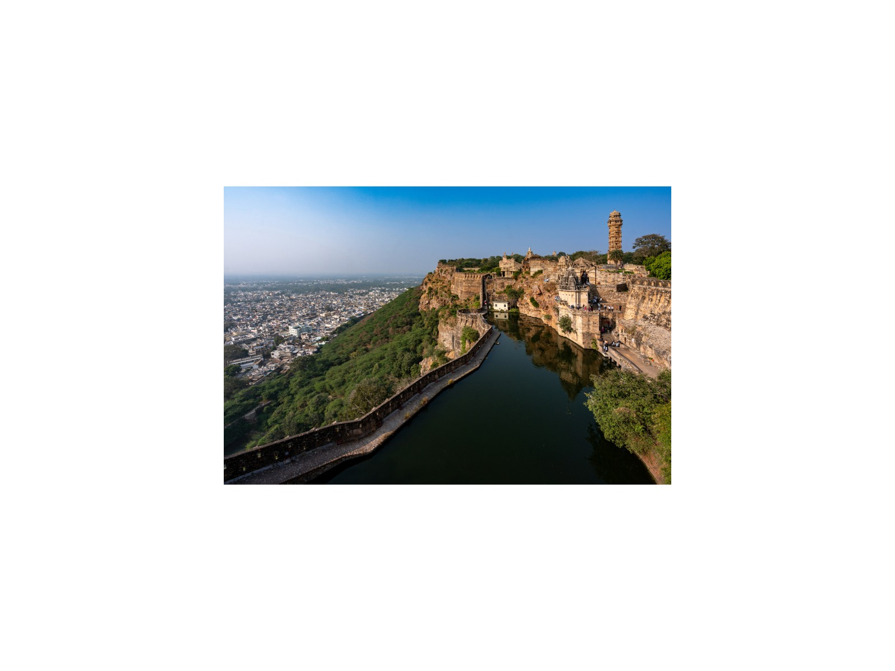
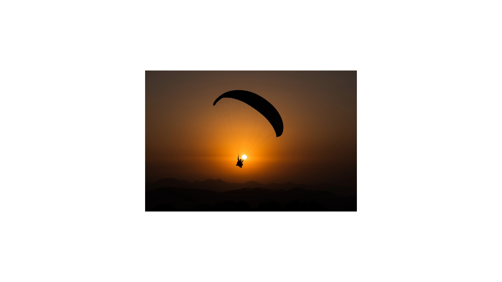
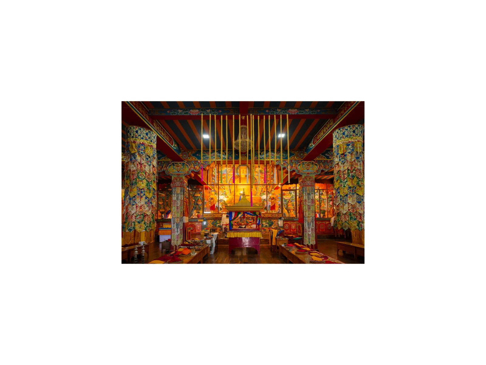
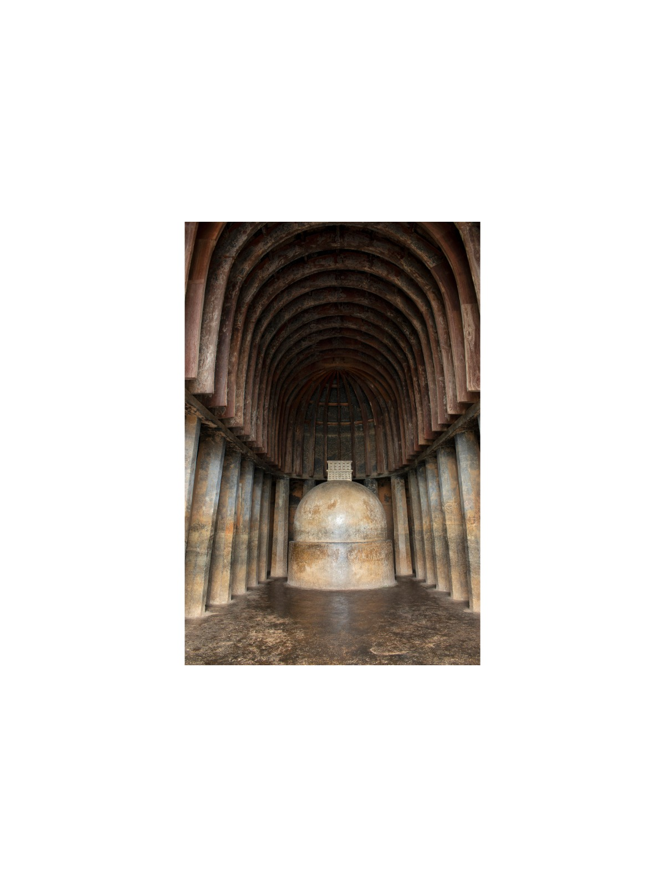
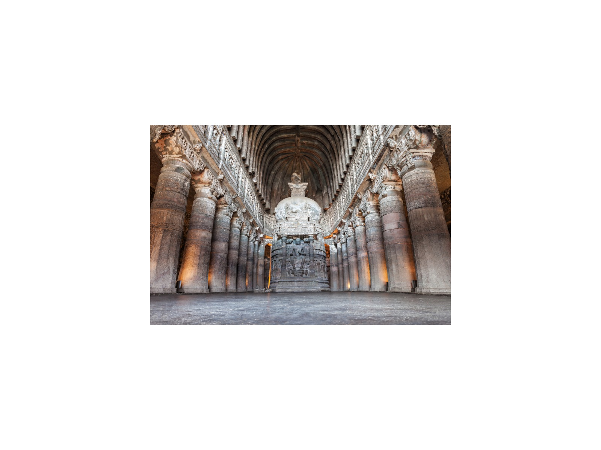

Delhi
India's capital, where Mughal, Sultanate and colonial heritage sit side by side.

Agra & Fatehpur Sikri
The Taj Mahal, Agra Fort, Fatehpur Sikri and the tombs of Akbar and Itimad-ud-Daulah.

Jaipur & Abhaneri
The Pink City, its hill forts and palaces, and the ancient Chand Baori stepwell.

Khajuraho, Orchha & Gwalior
Khajuraho's UNESCO temples, Panna Tiger Reserve and the palaces of Orchha and Gwalior.

Varanasi & Sarnath
The Ganges ghats, evening aarti and Sarnath, where the Buddha gave his first sermon.

Bodh Gaya & the Buddhist Circuit
Bodh Gaya, Gaya, Rajgir, Nalanda and Patna: the ancient pilgrim circuit of Bihar.

Jodhpur, Ranakpur & Kumbhalgarh
The Blue City beneath Mehrangarh, Ranakpur's marble Jain temple and Kumbhalgarh's great wall.

Udaipur & Chittorgarh
The City of Lakes, the Eklingji shrine and the legendary fortress of Chittorgarh.

Jaisalmer & Bikaner
The Golden City of the Thar with its living fort, and Bikaner's Junagarh Fort.

Ranthambore, Bundi & Bharatpur
India's famous tiger reserve, Bundi's stepwells and the Keoladeo bird sanctuary.

Himachal Pradesh
Colonial Shimla, the UNESCO Toy Train, the Kullu Valley and the Tibetan heart of McLeod Ganj.

Amritsar
The Golden Temple, Jallianwala Bagh and the Wagah border ceremony.

Darjeeling & Sikkim
Tea estates, Buddhist monasteries and Kanchenjunga from Darjeeling, Kalimpong and Gangtok.

Mumbai & the Konkan Coast
Mumbai's waterfront, Elephanta Caves, the Murud-Janjira sea fort and Raigad.

Pune & Nashik
Maratha Pune, the Karla and Bhaja caves, and Nashik on the sacred Godavari.

Aurangabad, Ellora & Ajanta
Rock-cut caves at Ajanta and Ellora, Daulatabad Fort, Khuldabad and Lonar crater.
Tell me your dates and interests
I will personally prepare an itinerary and quotation within 24 hours. No groups, no fixed scripts.